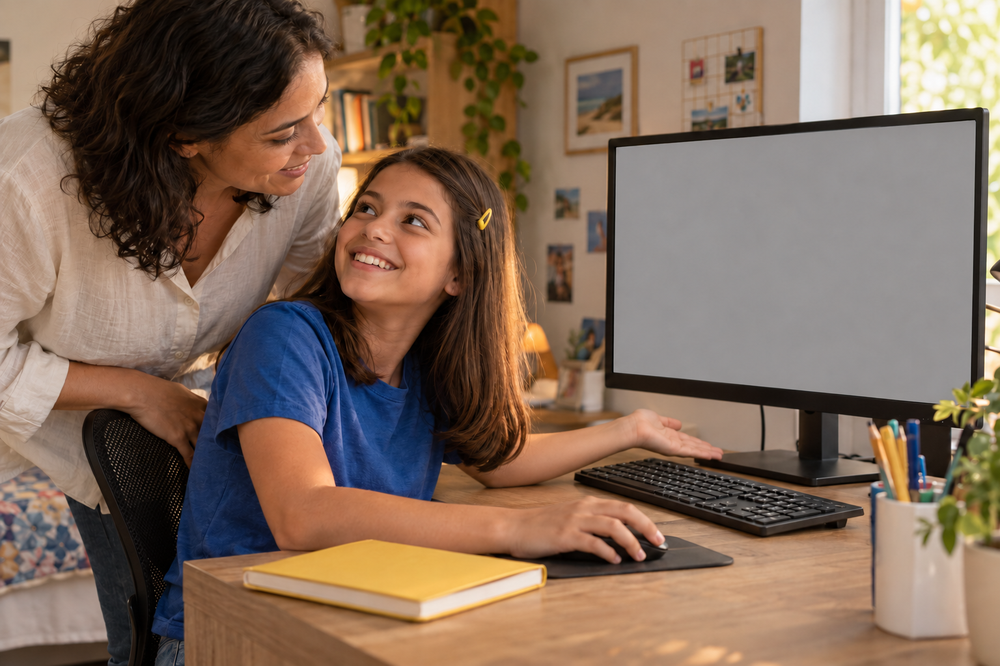
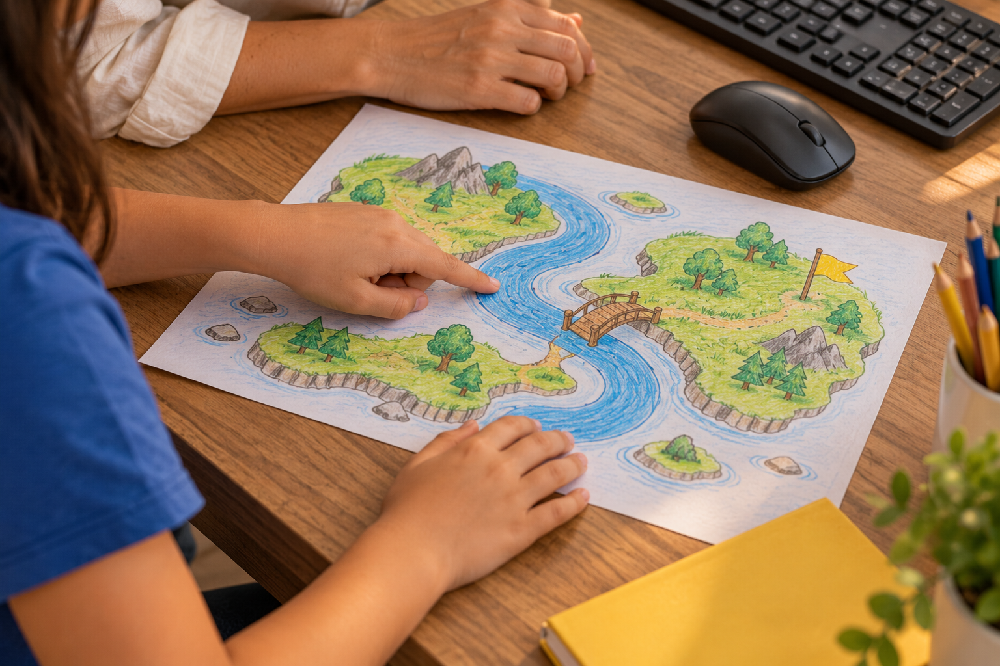
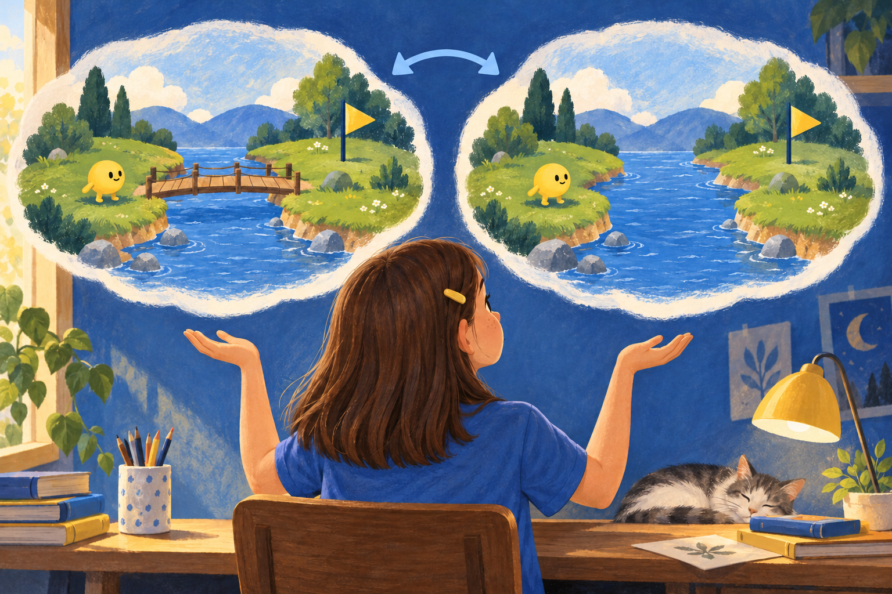
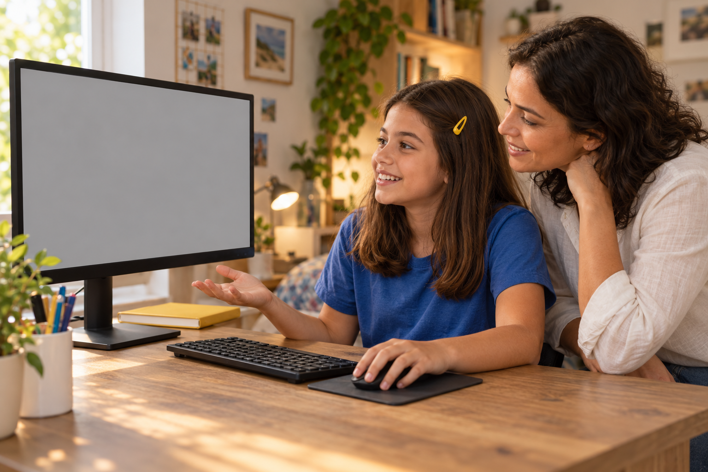
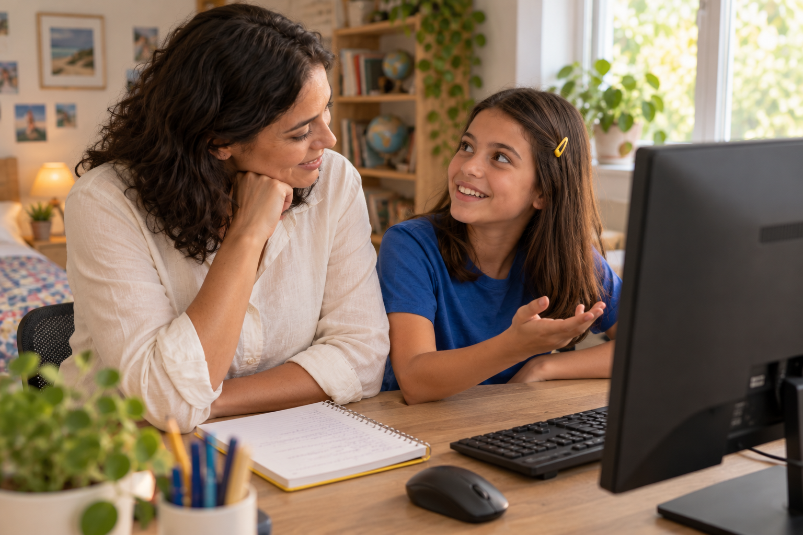

Por trás do jogo
A atividade ficou pronta.
Mas sua filha sabe explicar uma escolha que fez?

A atividade ficou pronta.
Mas sua filha sabe explicar uma escolha que fez?

Pode ser uma cor, um desenho ou uma regra do jogo.

Pergunte: “Por que você colocou isso aqui?” e dê tempo para ela responder.
Criando jogos, ela consegue testar a própria explicação.

Se diz que uma regra é importante, pode mudar essa regra e observar o resultado.
Neste jogo da memória, duas cartas diferentes ficam abertas por um instante antes de fechar.
Esse tempo permite ver os desenhos e tentar lembrar onde estão.
Quando tiramos a espera, as cartas fecham rápido demais para observar a segunda figura.
O teste mostra para que aquela instrução serve.
Se explicar com palavras for difícil, peça para ela mostrar no jogo.

Vocês podem comparar as duas versões e conversar sobre o que mudou.
A conversa ajuda você a acompanhar o que ela está entendendo.

Siga @criecomhelenaejulio para conhecer formas de participar das descobertas da sua filha.